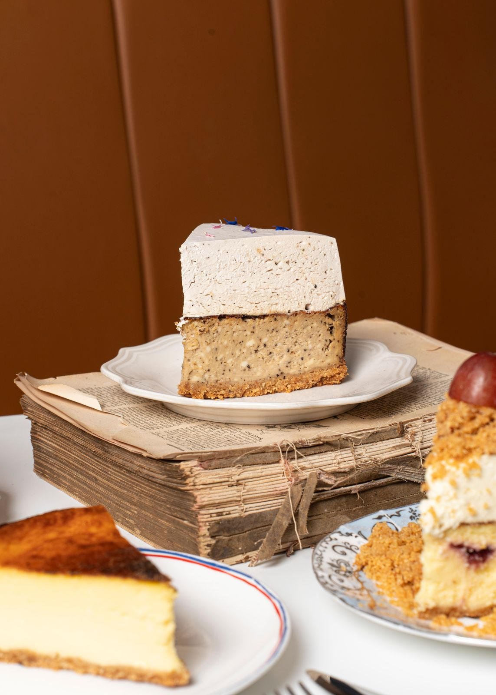

Pasticceria Olmo
Salva lo stile che preferisci e raccontaci cosa ti piace di più.
Parliamo della tua torta.
Chiedi delle torte su misura per compleanni e matrimoni
Link in bio
ciao@pasticceriaolmo.it@pasticceriaolmo
Torino e cintura